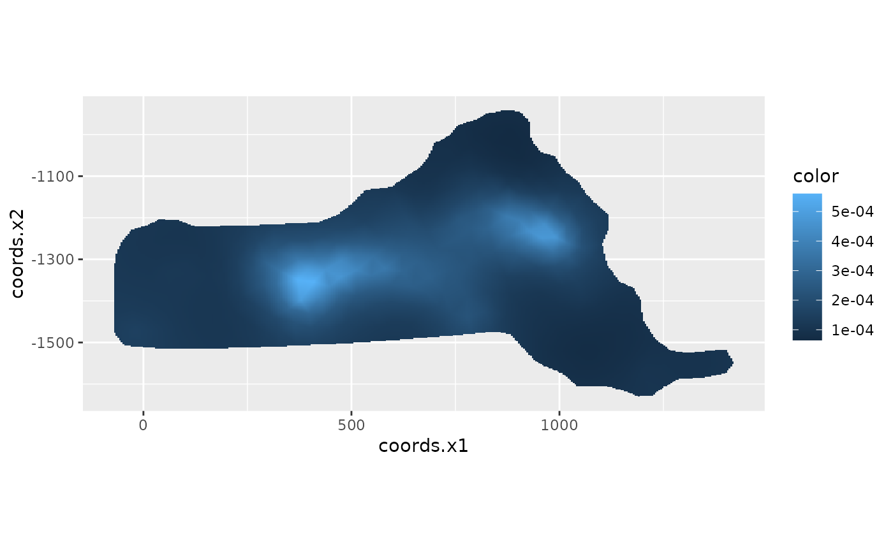

This a version of the mexdolphins dataset from the package dsm, reformatted
as point process data for use with inlabru. The data are from a combination of several NOAA
shipboard surveys conducted on pan-tropical spotted dolphins in the Gulf of Mexico. 47 observations
of groups of dolphins wre detected. The group size was recorded, as well as the Beaufort sea state at
the time of the observation. Transect width is 16 km, i.e. maximal detection
distance 8 km (transect half-width 8 km).
data(mexdolphin)A list of objects:
points:A SpatialPointsDataFrame object containing the locations of
detected dolphin groups, with their size as an attribute.
samplers:A SpatialLinesDataFrame object containing the transect lines
that were surveyed.
mesh:An inla.mesh object containing a Delaunay triangulation
mesh (a type of discretization of continuous space) covering the survey region.
ppoly:An SpatialPolygonsDataFrame object defining the boundary of the
survey region.
simulated:A SpatialPointsDataFrame object containing the locations of a
simulated population of dolphin groups. The population was simulated from a 'codeinlabru
model fitted to the actual survey data. Note that the simulated data do not have any associated
size information.
Library dsm.
Halpin, P.N., A.J. Read, E. Fujioka, B.D. Best, B. Donnelly, L.J. Hazen, C. Kot, K. Urian, E. LaBrecque, A. Dimatteo, J. Cleary, C. Good, L.B. Crowder, and K.D. Hyrenbach. 2009. OBIS-SEAMAP: The world data center for marine mammal, sea bird, and sea turtle distributions. Oceanography 22(2):104-115
NOAA Southeast Fisheries Science Center. 1996. Report of a Cetacean Survey of Oceanic and Selected Continental Shelf Waters of the Northern Gulf of Mexico aboard NOAA Ship Oregon II (Cruise 220)
# \donttest{
if (require("ggplot2", quietly = TRUE)) {
data(mexdolphin, package = "inlabru")
ggplot() +
gg(mexdolphin$mesh) +
gg(mexdolphin$ppoly, color = "blue") +
gg(mexdolphin$samplers) +
gg(mexdolphin$points, aes(size = size), color = "red") +
coord_equal()
ggplot() +
gg(mexdolphin$mesh, col = mexdolphin$lambda, mask = mexdolphin$ppoly) +
coord_equal()
}
#> Regions defined for each Polygons
#> Warning: Discarded ellps unknown in Proj4 definition: +proj=longlat +R=1 +no_defs +type=crs
#> Warning: Discarded datum unknown in Proj4 definition
#> Warning: Discarded ellps unknown in Proj4 definition: +proj=longlat +R=6378137 +no_defs +type=crs
#> Warning: Discarded datum unknown in Proj4 definition
#> Warning: Discarded ellps unknown in Proj4 definition: +proj=longlat +R=6378137 +no_defs +type=crs
#> Warning: Discarded datum unknown in Proj4 definition
#> Warning: Discarded ellps unknown in Proj4 definition: +proj=geocent +R=1 +units=m +no_defs +type=crs
#> Warning: Discarded datum unknown in Proj4 definition

# }
if (FALSE) {
if (requireNamespace("ggmap", quietly = TRUE) &&
require("ggplot2", quietly = TRUE)) {
gmap(mexdolphin$depth) +
gm(mexdolphin$ppoly, color = "blue") +
gm(mexdolphin$samplers) +
gm(mexdolphin$points, aes(size = size), color = "red")
gmap(mexdolphin$depth) +
gm(mexdolphin$depth, aes(col = depth)) +
gm(mexdolphin$ppoly)
}
}